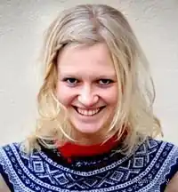

Марія Парр (норв. Maria Parr, 18 січня 1981, хутір Фіско, комуна Ванюльвен, Норвегія) – норвезька дитяча письменниця.
Дебютувала в літературі 2005 року книжкою "Вафельне серце". Це – весела й водночас сумна розповідь про пригоди 9-річного хлопчика Трілле та його сусідки й однокласниці Лени. Лена – заводійка й непосида, що багато в чому схожа на Пеппі Довгапанчоха. Трілле ж навпаки – виважений і поміркований. Він упевнений, що Лена – його найкращий друг, але не певен, чи так само найкращим другом вважає і вона його. Удвох діти наминають смачні вафлі, бавляться у війну, виступають в ролі вуличних музикантів, вирушають зганяти овець і влаштовують Ноїв ковчег. Але одного дня все зненацька обривається.
"Вафельне серце" отримало вельми прихильні відгуки, 2011 року за цією книжкою знято багатосерійний художній фільм. Після виходу книжки у світ П. навіть назвали "новою Астрід Ліндґрен". 2009 року вийшла друга книжка П. – "Тоня Ґліммердал", яку було удостоєно престижної норвезької літературної премії Браги в категорії "дитяча література". Головна героїня твору, рудоволоса Тоня – безстрашна, спритна і вперта. Та незважаючи на це вона часто страждає від самотності. Найкращий Тонин друг – непривітний Ґунвальд, якому 74 роки, і знають вони одне одного, як облуплених. Та чи справді це так? Коли Ґунвальд потрапляє в лікарню з переломом, Тоні відкривається його величезна таємниця, що навіки може зруйнувати затишне життя в Ґліммердалі. П. пише новонорвезькою мовою. Товариство підтримки й розвитку новонорвезької мови "Норегс Моллаг" (Noregs Mållag) двічі присуджувало їй премію "За дитячу літературу новонорвезькою". Обидві книжки письменниці перекладено багатьма мовами. Головні нагороди Премія "За дитячу літературу новонорвезькою" (2005, за "Вафельне серце") Премія фонду вікарія Альфреда Андерсона-Рюстса (2006, за "Вафельне серце") та багато иншого Премія Уле Віга (2009) Премія Браги (2009, за "Тоня Ґліммердал") Літературна премія Асоціації норвезьких критиків "За найкращу книгу для дітей та юнацтва" (2010, за "Тоня Ґліммердал") Премія Luchs (Німеччина) (2010, за "Тоня Ґліммердал")